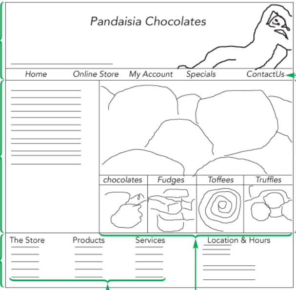

With making websites, the first approach would be to first draft a webpage design. An example could be shown below.
It is common in page layout design to extend the page body to the height of the browser window. To accomplish this, you set the height of the html element to 100% so that it matches the browser window height (a known value defined by the physical properties of the screen) and then you set the minimum height of the page body to 100% as in the following style rules: html {height: 100%;} body {min-height: 100%;}
Many grid layouts use the div (or division) element to mark distinct rows and columns of the grid.
As a new way to work with these properties, W3Schools talks more about layouts.